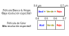
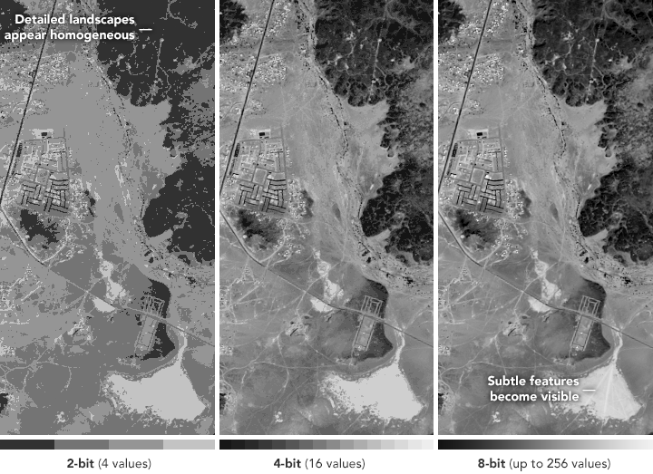

Tema 03: Satélites y Sensores
Características de Satélites y Sensores
Los instrumentos de Teledetección por satélite de observación de la Tierra se nombran de acuerdo:
El satélite (plataforma)
El instrumento (sensor)
Tipos de órbita
1. Polar: Es aquella en la que un satélite pasa por encima o casi por encima de ambos polos del cuerpo en órbita (generalmente un planeta como la Tierra, pero posiblemente otro cuerpo como la Luna o el Sol) en cada revolución. Tiene una inclinación de unos 60 a 90 grados con respecto al ecuador del cuerpo.
Las órbitas polares se utilizan para el mapeo terrestre, satélites de reconocimiento, así como para algunos satélites meteorológicos. Los satélites de órbita casi polar eligen comúnmente una órbita heliosincrónica, donde cada paso orbital sucesivo ocurre a la misma hora local del día.
Frecuencia: 1-3 Observaciones por día, por sensor.
2. Geoestacionaria: También conocida como órbita ecuatorial geosíncrona (GEO), es una órbita geosíncrona circular de 35 786 km de altitud sobre el ecuador de la Tierra (42 164 km de radio desde el centro de la Tierra) y sigue la dirección de rotación de la Tierra. Un objeto en tal órbita tiene un período orbital igual al período de rotación de la Tierra, un día sidéreo, por lo que para los observadores terrestres parece inmóvil, en una posición fija en el cielo.
Los satélites de comunicaciones a menudo se colocan en una órbita geoestacionaria para que las antenas satelitales basadas en la Tierra (ubicadas en la Tierra) no tengan que girar para rastrearlos, sino que puedan apuntar permanentemente a la posición en el cielo donde se encuentran los satélites. Los satélites meteorológicos también se colocan en esta órbita para el monitoreo y la recopilación de datos en tiempo real, y los satélites de navegación proporcionan un punto de calibración conocido y mejoran la precisión del GPS.
Frecuencia: Entre cada 30 segundos a 15 minutos.
¿Son muchos lo objetos en órbita terrestre?
En la actualidad son tantos los objetos en órbita, que es necesario disponer de servicios de rastreo de objetos, satélites, cohetes y debris, para evitar colisiones.
Pasos ascendentes y descendentes
La mayoría de las plataformas de satélites de teledetección actuales se encuentran en órbitas casi polares, lo que significa que el satélite viaja hacia el norte en un lado de la Tierra y luego hacia el polo sur en la segunda mitad de su órbita. Estos se llaman pases ascendentes y descendentes, respectivamente. Si la órbita también es sincronizada con el sol, lo más probable es que el paso ascendente esté en el lado sombreado de la Tierra, mientras que el paso descendente esté en el lado iluminado por el sol.
Los sensores que registran la energía solar reflejada solo captan la imagen de la superficie en un pase descendente, cuando hay iluminación solar disponible. Los sensores activos que proporcionan su propia iluminación o los sensores pasivos que registran la radiación emitida (por ejemplo, térmica) también pueden generar imágenes de la superficie en pasadas ascendentes.
Franja de Cobertura (Swath Width)
Cuando un satélite gira alrededor de la Tierra, el sensor “ve” una determinada porción de la superficie terrestre. El área fotografiada en la superficie se denomina franja de cobertura. Las franjas de imágenes para sensores espaciales generalmente varían entre decenas y cientos de kilómetros de ancho.

A medida que el satélite órbita la Tierra de polo a polo, su posición este-oeste no cambiaría si la Tierra no girara. Sin embargo, visto desde la Tierra, parece que el satélite se desplaza hacia el oeste porque la Tierra gira (de oeste a este) debajo de él. Este movimiento aparente permite que la franja del satélite cubra una nueva área con cada pasada consecutiva. La órbita del satélite y la rotación de la Tierra trabajan juntas para permitir una cobertura completa de la superficie de la Tierra, después de que haya completado un ciclo completo de órbitas.
Evolución de toma de imágenes por (Path/Row)

Tipos de Sensores: Pasivos y Activos
Sensores Pasivos
Detectan solo lo que se emite desde el paisaje o se refleja desde otra fuente (por ejemplo, la luz reflejada por el sol). Ejemplo: MODIS, MISR, OMI, VIIRS.
Sensores Activos
Los instrumentos emiten su propia señal y el sensor mide lo que se refleja (por ejemplo, sonar y radar). Ejemplo: CALIPSO.
Tipos de Resolución:
Resolución espacial: Se refiere a la medición espacial mínima posible.
Resolución temporal: Frecuencia de la medición.
Resolución espectral: Número de canales independientes.
Resolución radiométrica: Nivel de sensividad de los detectores.
Cada tipo de resolución depende de la configuración orbital del satélite y el diseño de los sensores. Las resoluciones son diferentes para cada sensor.
Resolución espacial
Pixel: Es la unidad más pequeña de una imagen.
- Una imagen digital se compone de una matriz bidimensional de elementos de imagen individuales, llamados píxeles, dispuestos en columnas en filas.
- Cada píxel representa un área en la superficie de la Tierra.
- Un píxel tiene un valor de intensidad y una dirección de ubicación en la imagen 2D.
- La resolución espacial se define por el tamaño de un píxel.
¿Importa la resolución espacial?

Resolución espectral
- La resolución espectral describe la capacidad de un sensor para definir intervalos finos de longitud de onda.
- Cuanto más fina sea la resolución espectral, más estrecho será el rango de longitud de onda para un canal o banda en particular.

Resolución radiométrica
Los datos de imágenes están representados por números digitales positivos que varían de 0 a (uno menos que) una potencia seleccionada de 2.
El número máximo de niveles de brillo disponibles depende del número de bits (representa la resolución radiométrica) utilizados para representar la energía registrada.
Cuanto mayor sea este número, mayor será la resolución radiométrica.
Importancia de la resolución radiométrica
Detecta la diferencia en los niveles de brillo.
Cuanto más sensible sea el sensor, mayor será la resolución radiométrica.
Si la precisión radiométrica es alta, la imagen será nítida. Se expresa en bits.
Valores radiométricos de una imagen
| Bits | Valores |
|---|---|
| 1 Bits | \(2^1 =\) 2 |
| 4 Bits | \(2^4 =\) 16 |
| 8 Bits | \(2^8 =\) 256 |
| 16 Bits | \(2^{16} =\) 65536 |
| 32 Bits | \(2^{32} =\) 4294967296 |
Ejemplo de resolución radiométrica

Resolución temporal
Con qué frecuencia un satélite puede proporcionar observación de la misma área en la tierra.
- Depende principalmente del ancho de la franja del satélite - cuanto mayor sea la franja -, mayor será la resolución temporal.